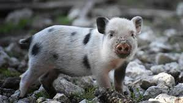

Gato Cholincho

El gato Cholincho es el último integrante de nuestro refugio. Se le encontro en la calle cerca de la plaza de San Miguel, necesitando un hogar.
Tortuga Cariola

La tortuga Cariola es el miembro más antiguo de nuestro refugio. Esta con nosotros desde su fundación, en 1986.
Chancho Clo
El Chancho Clo es un cerdito muy inteligente y amistoso, se comporta como un perro.
Loro Claudio

El Loro Claudio fue el favorito de nuestros visitantes. Cantaba y sabia mnuchas palabras humanas.